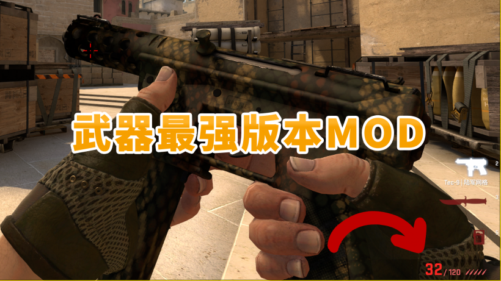

CSGO RushBä¸æ–‡ç½‘
CSGO RushBä¸æ–‡ç½‘

今天给大家介ç»�一款有æ„�æ€�çš„CSGO Mod：最强æ¦å™¨ç‰ˆæœ¬Mod。å—é�¢æ„�æ€�，这款MODå�¯ä»¥æŠŠCSGOæ¦å™¨è¿˜å�Ÿæˆ�å�²ä¸Šæœ€å¼ºçš„版本，比如32å�‘Tec9ã€�一æ�ªä¸€ä¸ªR8ç‰ï¼Œé€‚å�ˆæ€€å¿µè¿™äº›ç‰ˆæœ¬æ¦å™¨ã€�或没ç�©è¿‡æ—§ç‰ˆçš„ç�©å®¶ã€‚
MOD作者是SlothSquadron，下载地��下。
�始下载地�：https://drive.google.com/file/d/1iNQ_GrISLk7OPIuJVfblGK31e9yEWUUk/view
百度网盘：https://pan.baidu.com/s/1uT-U5OyH9u92MgnkpZq40Q?pwd=i9lr
æ��å�–ç �：i9lr
安装教程：在CSGO文件夹（steamapps\common\Counter-Strike Global Offensive\csgo）里新建一个�为“addons�文件夹，将MOD�缩包里的op_mod.vpk解�至这里��，打开游�会自动弹出�制�，说�安装完�，之�进地图就�以体验了。
注æ„�，安装MODå��æ— æ³•åŠ å…¥çº¿ä¸Šæœ�务器，å�ªèƒ½æœ¬åœ°ä½“验或ä¸�å�Œæ ·å®‰è£…MOD的好å�‹ä¸€èµ·æ¸¸ç�©ã€‚
最å��，如æ�œä½ ç�©è…»äº†æƒ³å°†æ¸¸æˆ�æ�¢å¤�æˆ�æ£å¸¸ç‰ˆæœ¬ï¼ŒæŠŠop_mod.vpkæ–‡ä»¶åˆ é™¤å�³å�¯ã€‚
MOD出处：https://www.reddit.com/r/GlobalOffensive/comments/mo7cmv/every_weapon_in_its_strongest_state_csgo_mod/
—————————————————-
详细的æ¦å™¨å�˜åŒ–请看下方，这里就ä¸�翻译了。
Glock
[23 January 2013]
This Glock had very high damage for a starter pistol and completely outclassed the P2000. Burst fire was also much more reliable.
“damage” “30” -> “39” //Higher base damage
“armor ratio” “0.94” -> “1.04” //Higher armor penetration
“inaccuracy move” “10.00” -> “12.00” //Worse moving accuracy
“inaccuracy fire alt” “45.00” -> “15.00” //Better burst-fire accuracy
“range modifier” “0.85” -> “0.90” //Less damage drop-off with distance
“recovery time crouch” “0.200000” -> “0.276310” //Slower initial accuracy recovery
“recovery time stand” “0.200000” -> “0.331573” //Slower initial accuracy recovery
“recovery time crouch final” “0.330000” -> “0.276310” //Faster spamming accuracy recovery
“recovery time stand final” “0.330000” -> “0.331573” //Faster spamming accuracy recovery
P2000 [NO CHANGES]
[23 January 2013]
The P200 has seen no changes after it was overhauled in January 2013. Prior to this, it functioned more like the USP did in CS:S but with some added armor penetration. It had a faster firerate and better spamming accuracy, but was unable to one hit kill enemies without helmets beyond medium range due to its significantly worse damage falloff with distance. While it’s completely reasonable to argue that this 2012 was more powerful than the current version, I decided to play it safe and keep the current version.
USP-S [NO CHANGES]
[14 August 2013] – CURRENT
The USP-S hasn’t received any changes since its release. (Aside from the movement accuracy nerf back in 2015 which was reverted after a week)
Dual Berettas [NO CHANGES]
[21 September 2021] – CURRENT
The Dualies have never been particularly strong in any CS game, CSGO included. An argument could be made that at the release of CSGO the Dualies were stronger as they dealt more damage, though they were also $700 making them a much harder sell. At that price there was little reason to choose them over a Deagle or other pistols.
P250
[23 January 2013]
This P250 could one hit kill helmeted opponents up to 443 units away! That’s pretty sizable for a pistol. Combined with the better movement accuracy, a $300 pistol was easily outclassing the rest of the pistols.
“primary reserve ammo max” “26” -> “52” //More reserve ammo
“damage” “38” -> “35” //Lower base damage
“range modifier” “0.90” -> “0.91” //Less damage-drop off with distance
“armor ratio” “1.28” -> “1.553” //Higher armor penetration
“inaccuracy move” “20” -> “13.41” //Better moving accuracy
Tec-9
[1 July 2014]
This buff only lasted a day before it was fixed. It gave the Tec-9 insanely low recoil and firing inaccuracy and was likely implemented unintentionally.
“range modifier” “0.790000” -> “0.831000” //Improved damage at range
“inaccuracy crouch” “3.680000” -> “7.57” //Decreased base crouching accuracy
“inaccuracy stand” “4.900000” -> “9.43” //Decreased base standing accuracy
“inaccuracy fire” “45” -> “15.88” //Greatly improved accuracy when firing
“recovery time crouch” “0.315000” -> “0.322362” //Slower accuracy recovery (crouching)
“recovery time stand” “0.391000” -> “0.386834” //Faster accuracy recovery (standing)
“recoil magnitude” “23” -> “15” //Greatly reduced recoil
“primary clip size” “18” -> “32” //Increased magazine size
“primary reserve ammo max” “90” -> “120” //Increased ammo in reserve
Five-SeveN
[20 February 2013]
While this Five-SeveN is noticeably less accurate when tapping and spamming a few bullets, its moving accuracy is considerably higher than the current version. This mobility allowed players to be much more aggressive and it was generally seen as a more powerful option before it received its rework in 2017.
“inaccuracy move” “40” -> “13.41” //Improved accuracy when moving
“inaccuracy fire” “25” -> “32.45” //Worsened accuracy penalty for firing
“recovery time stand” “0.2” -> “0.332613” //Slower initial accuracy recovery
“recovery time crouch” “0.2” -> “0.273844” //Slower initial accuracy recovery
“recovery time stand final” “0.5” -> “0.332613” //Faster spamming accuracy recovery
“recovery time crouch final” “0.5” -> “0.273844” //Faster spamming accuracy recovery
CZ75-Auto
[12 February 2014]
This CZ75-Auto had an insane damage output for a pistol. Some people would even refer to it as the “$300 pocket AK�. It completely outclassed the other pistols and dominated the meta for a long time. It took several nerfs to bring the CZ down to the point it is today. Note: Due to the limitations of CSGO modding, I cannot revert the CZ’s weapon slot back to the P250.
Deploy Animation Time 1.83 seconds -> 1.00 seconds
“in game price” “500” -> “300” //Reduced price
“recoil angle variance” “120” -> “180” //Altered recoil pattern
“recoil magnitude” “31” -> “25” //Reduced amount of recoil
“recoil magnitude variance” “6” -> “10” //Altered recoil pattern
“inaccuracy fire” “35.000000” -> “25.00” //Improved accuracy when firing
“damage” “31” -> “35” //Increased base damage
“inaccuracy crouch” “7.600000” -> “6.83” //Increased base crouching accuracy
“inaccuracy stand” “10.430000” -> “9.10” //Increased base standing accuracy
“recovery time crouch” “0.227500” -> “0.287823” //Slower initial accuracy recovery
“recovery time stand” “0.242500” -> “0.345388” //Slower initial accuracy recovery
Desert Eagle
[23 January 2013]
This Deagle was incredibly powerful for the one week it was in the game. It had incredibly high damage that could actually one hit kill unarmored opponents with a stomach shot at point blank. Its incredibly fast accuracy recovery time meant that unlike the current Deagle, you did not have to wait long at all between shots to be accurate. As long as you were mindful of the recoil, this Deagle could be spammed with reckless abandon. The main downside is that its base accuracy is considerably worse when standing.
“in game price” “700” -> “800” //Increased price
“damage” “53” -> “84” //Increased base damage
“headshot multiplier” “3.900000” -> “4.00” //Increased headshot damage multiplier
“range modifier” “0.850000” -> “0.926” //Lessened damage reduction with distance
“inaccuracy crouch” “2.180000” -> “2.78” //Decreased base crouching accuracy
“inaccuracy stand” “4.200000” -> “7.70” //Decreased base standing accuracy
“inaccuracy land” “0.043000” -> “0.730” //Decreased initial accuracy after landing
“inaccuracy fire” “72.230003” -> “84.23” //Worsened accuracy penalty for firing
“inaccuracy move” “48.099998” -> “58.10” //Worsened accuracy penalty for moving
“recovery time crouch” “0.449927” -> “0.209927” //Faster accuracy recovery
“recovery time stand” “0.811200” -> “0.35912” //Faster accuracy recovery
“recovery time crouch final” “0.449927” -> “0.209927” //Faster accuracy recovery
“recovery time stand final” “0.811200” -> “0.35912” //Faster accuracy recovery
R8 Revolver
[8 December 2015]
This is one of the most infamous weapons in CS history due to the overpowered state it was in at release. This version of the R8 only lasted 2 days before it was nerfed. It was OP for one reason, it was capable of one hit killing opponents with a body shot, even against kevlar. This essentially made it into a pocket AWP.
event AE_WPN_PRIMARYATTACK 1 “0.2” -> “0.3333” //Increased primary fire delay
“in game price” “600” -> “850” //Increased price
“spread” “0.520000” -> “0.480000” //Very slight reduction to base inaccuracy
“damage” “86” -> “115” //Increased base damage
Nova [NO CHANGES]
[13 March 2019] – CURRENT
The only changes the Nova has seen since launch have been price reductions and enabling wallbanging. It is currently at its most powerful state.XM1014
[1 May 2013]
The increased damage made the XM1014 much more reliable, which is probably why this version only lasted a week. It should be noted that since this is an older version, the XM is missing a number of smaller improvements (no spread reduction, no price reduction, and no wallbanging), but the increased damage outweighs them all in my opinion.
“in game price” “2000” -> “2200” //Increased price
“penetration” “1” -> “0” //Removed ability to wallbang
“spread” “38.000000” -> “40.00” //Increased spread
“damage” “20” -> “22” //Increased base damage
Sawed-Off
[1 October 2012]
The Sawed-Off hasn’t received many changes over its life though I’d argue that the July 2014 is the most powerful as it dealt slightly more damage and had a slightly tighter spread. The downsides are that it was $100 more expensive and could not wallbang even the thinnest of wood panels. It’s extremely close and I could have chosen either the present day Sawed-Off or this one, but I’d say this one wins just barely.
“in game price” “1100” -> “1200” //Increased price
“penetration” “1” -> “0” //Removed ability to wallbang
“spread” “62.000000” -> “60.00” //Reduced spread
“range” “1400” -> “750” //Reduced max range
“damage” “32” -> “30” //Reduced base damage
“bullets” “8” -> “9” //Increased the number of pellets fired
Mag-7
[1 October 2012]
The Mag-7 used to have a noticeably higher firerate (about 30% faster) that allowed players to use it very aggressively. While it was situational, when used correctly it could easily pay for itself and in some circumstances, plow through an entire enemy team. It should be noted that this Mag-7 is more expensive and is incapable of wallbanging, but it’s a small price to pay for higher damage ouput.
“in game price” “1300” -> “1700” //Increased price
“penetration” “1” -> “0” //Removed ability to wallbang
“range” “1400” -> “1500” //Increased max range
“damage” “30” -> “28” //Reduced base damage
“bullets” “8” -> “9” //Increased the number of pellets fired
“cycletime” “0.850000” -> “0.65” //Increased firerate
“inaccuracy ladder” “134.259995” -> “34.26” //Improved accuracy when on ladders
Mac-10 [NO CHANGES]
[31 March 2015] – CURRENT
With its great moving accuracy, the current Mac-10 version beats out any of the previous versions. While the Mac-10 did cost $1000 for a week allowing it to be bought in Casual pistol rounds (while lacking some of the buffs it has currently), I’m balancing this mod around competitive play.
MP9 [NO CHANGES]
[31 March 2015] – CURRENT
The current version of the MP9 is surprisingly accurate and damaging regardless of distance. While it did have a version with better moving accuracy it lacked both of these traits. I’d say the current version is the strongest it has ever been.
MP7 [NO CHANGES]
[12 June 2018] – CURRENT
The current version of the MP7 is the best iteration by far. Prior to this its accuracy was rather lacking and its price was higher, meaning that other smgs outclassed it in nearly every aspect.
MP5-SD [NO CHANGES]
[3 October 2018] – CURRENT
The MP5-SD has only ever seen a single change. The day after release they increased the distance at which other players can hear the firing noise. At that time, the MP5-SD had not yet been enabled for competitive play as it was being tested in casual game modes for about a month and a half. Therefore I will not be including this change.
UMP-45
[2 October 2014]
At $1200 this UMP-45 had incredible damage output for its price, out-damaging all other SMGs aside from the expensive P90. It overshadowed all the other SMG options until it was nerfed.
“range modifier” “0.750000” -> “0.850000” //Lessened damage reduction with distance
P90
[21 August 2012]
The P90 was one of the very first weapons to be nerfed in the game. Back when CSGO launched the P90 would net players a hefty $900 per kill and had higher movement accuracy. The only thing this P90 loses out on is that it has slightly less armor penetration.
“armor ratio” “1.380000” -> “1.30” //Reduced armor penetration
“kill award” “300” -> “900” //Increased kill award
“inaccuracy fire” “2.850000” -> “2.30” //Improved accuracy when firing
“inaccuracy ladder” “132.169998” -> “41.24” //Improved accuracy when on ladders
“inaccuracy move” “31” -> “19.24” //Improved accuracy when moving
PP-Bizon [NO CHANGES]
[10 April 2020] – CURRENT
The Bizon has received a number of buffs since release. The most recent balance update increased its armor penetration. This is the strongest it has ever been.
Galil AR [NO CHANGES]
[18 November 2019] – CURRENT
The Galil AR has for the most part received nothing but buffs over time. Compared to previously, it’s much more accurate and costs less than it ever has. This is without a doubt the best version.
FAMAS [NO CHANGES]
[18 November 2019] – CURRENT
Like the Galil, the Famas for the most part has received mostly buffs over time. It is now cheaper and more accurate than it has ever been in CSGO. At launch it did have a more manageable burst fire mode, but I’ll take the lower price and more reliable automatic mode any day.
AK-47 [NO CHANGES]
[3 August 2016] – CURRENT
A strong argument could be made that the AK pre 2014 might be stronger as its movement inaccuracy wasn’t as harsh, allowing for more aggressive play. However, this was before the M4 and AK received the buff to tapping and nerf to spraying. I’m playing it safe and keeping the current version as it allows for more skillful plays.
M4A4 [NO CHANGES]
[3 August 2016] – CURRENT
Just like the AK47, an argument could be made that the pre 2014 version is stronger due to the lower accuracy penalty for moving. I’m going to play it safe and choose the current version as the improved tapping accuracy it provides is also greatly appreciated.
M4A1-S [NO CHANGES]
[21 September 2021] – CURRENT
At release, the M4A1-S and M4A4 received similar usage, though over the course of a year it slowly overtook the M4A4 until the vast majority of players had it equipped. It received a number of nerfs over the years until eventually the M4A4 overtook it. With its most recent buffs, I actually believe the M4A1-S to be even stronger than it was when it was released. While its firerate is lower than the initial version, it’s high base damage compensates for this and the lower firerate contributes to a smaller recoil pattern.
SG 553
[9 October 2018]
It look a long time for players to realize it, but the SG 553 was a very powerful option on Terrorist side. When its price was reduced, players began to re-evaluate how power the gun was, and even after its price was reverted it took another round of nerfs until it was no longer considered overpowered.
“in game price” “3000” -> “2750” //Reduced price
“cycletime” “0.110000” -> “0.090000” //Increased firerate
“spread” “0.600000” -> “0.500000” //Slightly improved base accuracy
“inaccuracy crouch” “3.810000” -> “2.840000” //Improved base crouching accuracy
“inaccuracy stand” “5.810000” -> “3.780000” //Improved base standing accuracy
“inaccuracy fire” “7.950000” -> “6.680000” //Improved accuracy when firing
“inaccuracy crouch alt” “3.050000” -> “1.040000” //Improved base crouching scoped accuracy
“inaccuracy stand alt” “3.810000” -> “2.180000” //Improved base standing scoped accuracy
“inaccuracy fire alt” “9.200000” -> “6.680000” //Improved scoped accuracy when firing
AUG
[5 February 2014]
This AUG was so powerful the one week it was present in the game was given the nickname “The AUGpocalypse� It’s high firerate and low recoil meant that you could very easily land a lot of bullet on an enemy very quickly.
“max player speed alt” “150” -> “190” //Increased movement speed when scoped
“cycletime” “0.100000” -> “0.08” //Increased firerate
“inaccuracy crouch” “3.680000” -> “2.88” //Increased base crouching accuracy
“inaccuracy stand” “4.900000” -> “3.85” //Increased base standing accuracy
“inaccuracy fire” “7.290000” -> “6.16” //Increased accuracy when firing
“inaccuracy crouch alt” “3.110000” -> “1.01” //Increased base crouching accuracy (scoped)
“inaccuracy stand alt” “3.680000” -> “2.12” //Increased base standing accuracy (scoped)
“inaccuracy fire alt” “7.290000” -> “6.16” //Increased accuracy when firing (scoped)
“recoil magnitude” “24” -> “21” //Reduced recoil
“recoil magnitude alt” “16” -> “14” //Reduced recoil (scoped)
M249
[21 August 2012]
This is the version of the M249 before they nerfed the movement accuracy for all automatic weapons. This is the only update the M249 has ever received.
“inaccuracy move” “156.250000” -> “106.25” //Improved accuracy when moving
Negev
[21 August 2012]
Before the Negev was revamped to work as a “suppressive fire� gun, it functioned similarly to the M249, as just a standard gun with an insanely high firerate and recoil. Its price was so high that it could hardly be considered viable, though it brought a lot of joy to the players that could afford it. Normally I’d side with the current version of the Negev being more powerful as it’s actually affordable and at least tries to fill a role rather than being a unwieldy “luxury gun� (with limited success) but I know a lot of people are going to want to try out the old Negev. So what the heck, I’ve brought it back in all its glory. This version of the Negev is also before they pushed the nerf that reduced movement accuracy for all automatic weapons
[NOTE]: Unfortunately I cannot revert the Negev’s firing sound due to the method this mod uses for installation. While I could replace the firing sound if this was made for the MIGI modding tool, I decided I’d rather keep the installation of this mod as simple as possible.
“primary reserve ammo max” “300” -> “200” //Reduced amount of ammo in reserve
“attack movespeed factor” “0.500000” -> “1.000000” //Removed movement speed penalty when firing
“max player speed” “150” -> “195” //Increased max movement speed
“in game price” “1700” -> “5700” //Increased price
“armor ratio” “1.420000” -> “1.50” //Increased armor penetration
“cycletime” “0.075000” -> “0.060” //Increased firerate
“inaccuracy fire” “30.000000” -> “3.37” //Lessened accuracy penalty when firing
“inaccuracy move” “159.139999” -> “109.14” //Improved accuracy when moving
“recovery time crouch” “0.250000” -> “0.624987” //Slower accuracy recovery
“recovery time stand” “0.300000” -> “0.874982” //Slower accuracy recovery
“recovery time crouch final” “0.080000” -> “0.624987” //Slower accuracy recovery
“recovery time stand final” “0.100000” -> “0.874982” //Slower accuracy recovery
“recoil angle variance” “0” -> “50” //Increased horizontal recoil
“recoil magnitude” “20” -> “22” //Increased strength of recoil
“inaccuracy pitch shift” “-50.000000” -> “0.000000” //Removed firing sound pitch shifting
“inaccuracy alt sound threshold” “0.020000” -> “0.000000” //Removed firing sound pitch shifting
SSG08 [NO CHANGES]
[1 July 2014] – CURRENT
Aside from the changes to jumping accuracy (this was a change to all weapons), the SSG08 hasn’t received any changes since 2014. Due to the nature of the change to the jumping inaccuracy system, it’s impossible for me to fully revert the nerf to its jumping accuracy. As stated above, no changes regarding jumping accuracy or tagging are included in this mod.
AWP
[23 January 2013]
Prior to the nerf to its scoped movement speed, the AWP could be played much more aggressively making it a great deal more powerful.
“max player speed alt” “100” -> “150” //Increased movement speed when scoped
“recoil magnitude alt” “25” -> “78” //Only a visual effect, no gameplay implications
“recoil magnitude variance alt” “2” -> “15” //Only a visual effect, no gameplay implications
G3SG1
[23 January 2013]
Much like the AWP did pre-nerf, the G3SG1 used to have higher scoped movement speed, allowing players to play more aggressively.
“max player speed alt” “120” -> “150” //Increased movement speed when scoped
SCAR-20
[23 January 2013]
Much like the AWP did pre-nerf, the SCAR-20 used to have higher scoped movement speed, allowing players to play more aggressively.
“max player speed alt” “120” -> “150” //Increased movement speed when scoped
Zeus x27
[15 September 2015]
This Zeus only cost $100 and gave a standard kill award of $300 instead of not giving a kill award at all. Its movement speed was also noticeably higher.
“in game price” “200” -> “100” //Reduced price
“kill award” “0” -> “300” //Increased kill award
“max player speed” “220” -> “240” //Increased movement speed